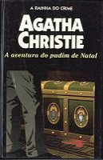

A Aventura do Pudim de Natal
The Adventure of the Christmas Pudding
Durante um Natal que prometia ser monótono e aborrecido, Hercule Poirot lança mão de sua inteligência e seu senso de humor para impedir o roubo de um valiosíssimo rubi... Com seu faro inconfundível, Miss Marple investiga o cruel assassinato de uma mulher... No interior de um baú espanhol, um cadáver desafia as autoridades e o talento do genial detetive belga... Estas e outras aventuras integram a nova coletânea de contos que trazem a marca registrada da “velha dama” Agatha Christie, e que os leitores certamente hão de saborear com indiscutível prazer.
A Aventura do Pudim de Natal
Para tentar resolver o caso do roubo de um rubi, Poirot é convidado a passar o Natal em uma casa que celebra a festa da forma tradicional inglesa. No dia de Natal ele recebe um bilhete avisando a não comer o pudim de passas. Analisando o comportamento das pessoas da casa Poirot tenta descobrir onde está o rubi desaparecido e quem o roubou.
O Mistério do Baú Espanhol
Na manhã seguinte à uma reunião informal na casa do Major Rich, seu mordomo William Burgess encontra o Sr. Clayton morto dentro do baú espanhol da sala de estar. O Major Rich é preso por suspeita do assassinato. A Sra Clayton pede a Poirot que descubra quem realmente matou seu marido, pois não acredita na culpa de seu amigo.
O Reprimido
O Sr Reuben Astwell é encontrado morto no seu escritório. Antes de sua morte, ele tinha discutido com seu irmão, sua mulher e seu secretário. Mas quem acaba sendo incriminado é o seu sobrinho, pois o mordomo o ouviu chegar em casa antes da morte do tio. Hercule Poirot é chamado para descobrir se o sobrinho realmente matou o Sr Astwell ou se foi outra pessoa.
O Caso das Amoras Pretas
Durante um jantar com o seu amigo Henry Bonnignton, Hercule Poirot conversa com a garçonete e descobre que um cliente sempre vai ao restaurante nos mesmos dias e horários e sempre pede os mesmos pratos há 10 anos. Quando fica sabendo que o cliente mudou seus hábitos repentinamente fica desconfiado e resolve investigar o motivo da mudança.
O Sonho
Hercule Poirot é chamado à casa do Sr. Benedict Farley para um encontro. Lá ele diz a Poirot que sempre sonha que se mata com um tiro. Pouco tempo depois o sonho se torna realidade e o detetive investiga essa morte para tentar confirmar se foi um suicídio ou se alguém se aproveitou desse sonho para assassinar o Sr. Farley.
A Extravagância de Greenshaw
A estranha moradora de uma casa mais estranha ainda é assassinada com uma flecha no pescoço, e nenhuma das pessoas que moram na casa tiveram a oportunidade de matá-la. Ninguém sabe quem ficará com sua herança. Felizmente Miss Marple está por perto para desvendar esse mistério.